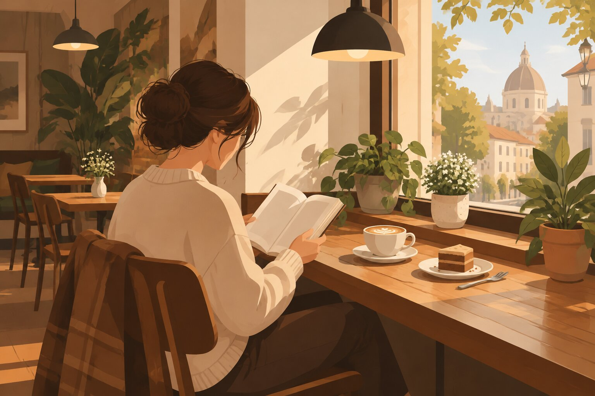
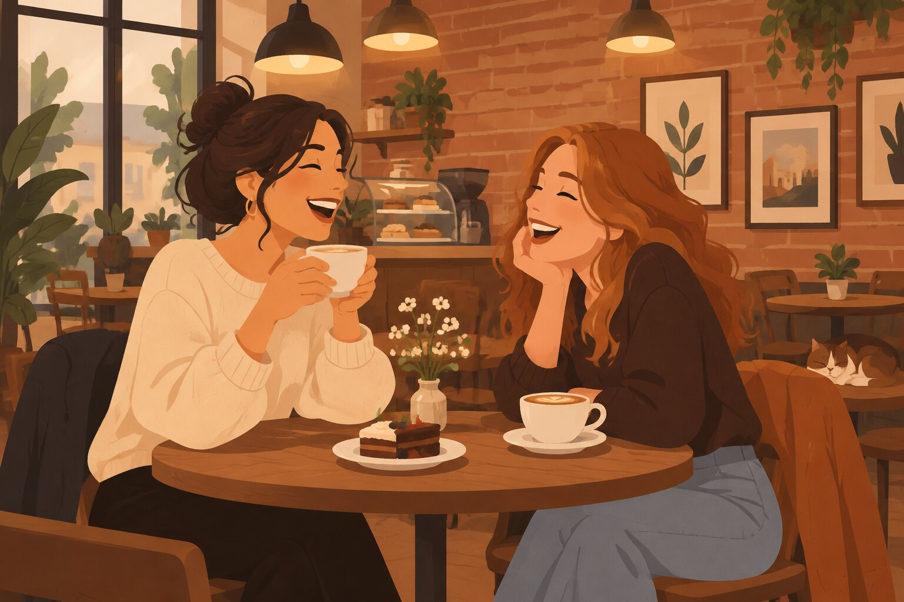

Near you
Cafes near your current location, or any postcode you set. We filter out well-known chains by name - that is best effort, not a guarantee, so tap Map to judge a spot for yourself.
or
Nearby cafes and weather are looked up from OpenStreetMap and Open-Meteo using the location or area you provide. This site itself stores nothing about you.

A table for one
Small cafes are built for solo hours. Here is how to use one well.
- 📖Read a chapter or threeBring a real book, order something warm, and let the background hum do the rest.
- ✍️Journal or sketchOne page about your day, or sketch the room. Small cafes are full of small things worth drawing.
- 💻A change-of-scene work sessionAn hour of focused work tastes better with a flat white. Buy something every hour or so - that is the deal.
- 🎧Coffee and a podcastWindow seat, one episode, no screen. Watch the street go by.
- 🧐Try the house specialSmall cafes usually have one drink or bake they are proud of. Ask what it is and order that.
- 🚶Cafe-hop the neighbourhoodWalk it offTwo or three small cafes, one drink each, a walk in between. A whole afternoon, sorted.

Bring someone
A small cafe table fits two coffees and one long conversation.
- 💬The proper catch-upNot a quick call - an actual hour, face to face, phones mostly away. Small cafes are made for this.
- 🍰Split the cakeOrder one slice and two forks, or two slices and no regrets. Either way, share.
- 🎓Study or work dateSide by side, headphones in, a little company without the pressure to talk the whole time.
- 🎲Cards or a small board gameA travel-size game fits any table. Keep it quick and keep it friendly.
- 🗺Plan the next thingTrips, birthdays, weekends - plans made over coffee somehow actually happen.
- 😊Introduce someone to your favouriteEveryone has one small cafe they guard like a secret. Share yours with someone who will appreciate it.
Today, by mood
Pick the mood, take the table.
😴TiredNearest small cafe, whatever they brew, ten quiet minutes.
💻FocusedCorner table, laptop, one drink an hour. Headphones optional.
🧐CuriousAsk for the house special or the bean of the week. Say yes.
👥SocialText a friend: "that little cafe, 3 pm". Done.
🧘QuietWindow seat, a book, phone in the bag.
🍫Sweet toothWhatever is in the cake display. Point at it. No overthinking.